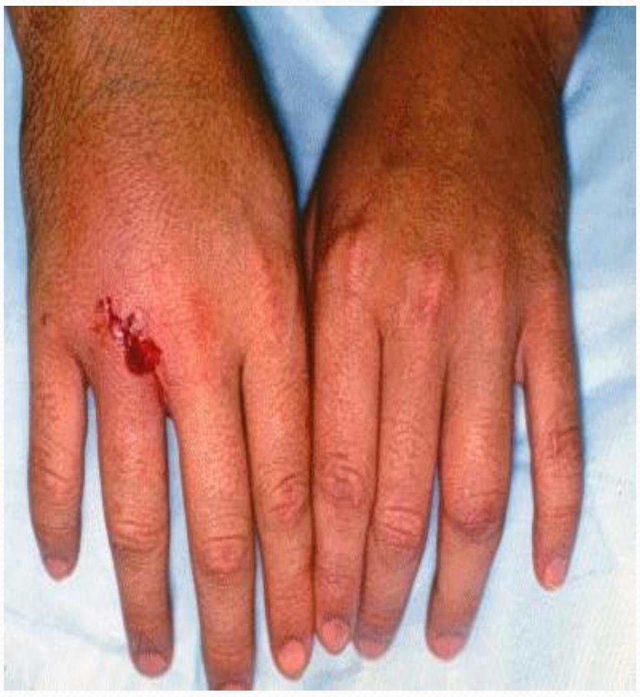
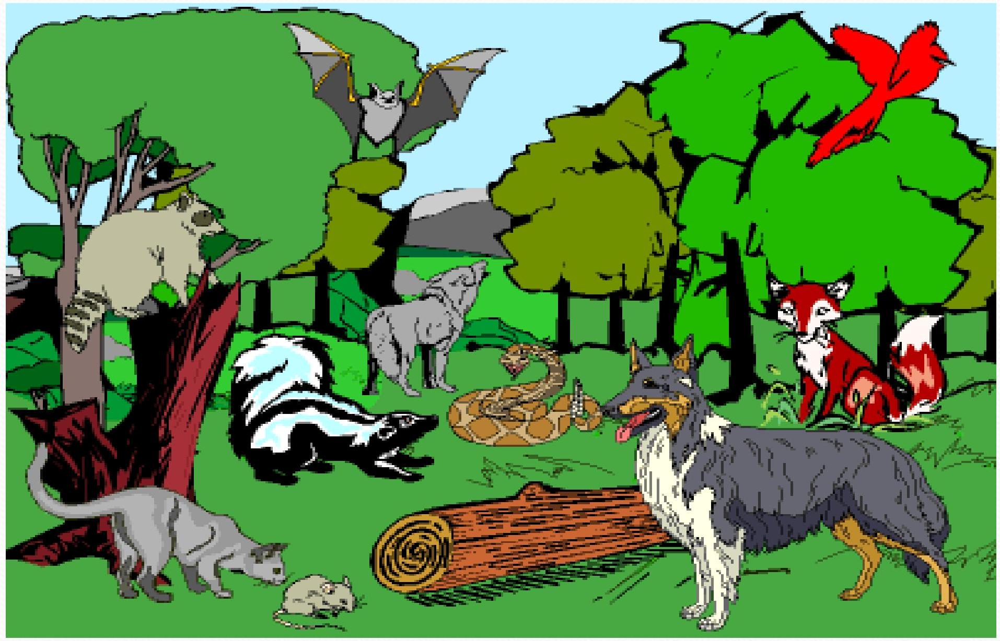

Bites and Stings
Rabies
Defined: Rabies is a preventable viral disease of mammals most often transmitted through the bite of a rabid animal
Any mammal can get rabies.
Raccoons, skunks, foxes and bats
Dogs, cats, cattle and ferrets
Humans
How does rabies make you sick?
Once inside the body, the virus travels along the nerves.
Its main target is the the brain and spinal cord.
Foxes
Skunks
Ground Hogs
Cats - especially stray and unvaccinated
Dogs - especially stray unvaccinate
Ferrets
Many people have ferrets as pets. They should be vaccinated for rabies.
Mammals that are less likely to carry rabies
Animals that don't carry rabies
Rabies Virus
The rabies virus infects the central nervous system, ultimately causing disease in the brain and death
Transmission
The virus is typically transmitted by being deposited under the skin, usually through a bite wound.
Contamination of a pre-existing wound is possible but unlikely because the local inflammatory reaction which follows a wound, quickly seals the comprised skin and prevents entry of the virus.
Transmission across mucous membranes is also possible, but less likely than a bite wound.
Aberrant Routes of Transmission
A small number of human rabies cases have been reported following corneal transplants.
This suggests that human rabies cases may be underreported.
Aerosol (airborne) transmission of the virus has also been reported. However, this is possible only under unusual circumstances.
Persons have contracted rabies presumably by airborne transmission after visiting bat caves (Frio Cave, Texas.)
Survivability of the Rabies Virus
The rabies virus is extremely short lived under most environmental conditions.
It is easily inactivated by heat and drying.
Capable of surviving for a few days in cold temperatures.
Thorough and immediate waching of
course of a Rabies Infection
Once introduced, the rabies virus travels
retrograde up the nerves to the spinal cord eventually reaching the brain.
Viral Spreading in Animals
In cats and dogs, the clinical symptoms usually begin before the virus is found in the saliva.
Sometimes virus can be found one to three days before clinical symptoms in cats and three to five days in dogs. Ferrets is something < 10 days.
No reliable information regarding the appearance of virus in the saliva is available for other animal species .
There is some evidence that certain wildlife species, like skunks and bats, may excrete virus in their saliva for long periods before becoming ill.
Rabies in Massachusetts 2003
207 Wild animals diagnosed with rabies
86 Skunks
81 Raccoons
AND
23 Bats
13 Foxes
8 Domestic Animals
6 cats
4 Other wild aı
2 dogs
Fever
Headache
Weakness
Discomfort
- Usually exhibited for 2-10 days
More Severe Symptoms
Insomnia
Anxiety
Confusion
Slight or Partial Paralysis
Hallucinations
Excitation
Agitation
Hypersalivation
Difficulty Swallowing
Hydrophobia
- Death usually occurs within days of the onset of the more severe symptoms
Terrestrial Reservoirs of Rabies
Different terrestrial (non-bat) mammalian species are the rabies reservoirs in different parts of the country.
Strains in the USA include - skunk, raccoon, fox, and coyote. For a given strain, only transmission within the host species is sufficiently successful to maintain the disease from year to year.
This was observed before monoclonal antibody testing revealed that distinctly different strains of the virus were involved.
The vast majority of rabies cases reported to the Centers for Disease Control and Prevention (CDC) each year occur in wild animals like raccoons, skunks, bats and foxes

Rabies in Animals
Rabid Animals By Frequency
Raccoons
Skunks
Bats
Foxes
Rodents & Lagomorphs
-The rabies virus is transmitted through saliva or brain/nervous system tissue. You can only get rabies by coming in contact with these specific bodily excretions and tissues
-Rabies is transmitted only when the virus is introduced into a bite wound, open cuts in skin, or onto mucous membranes such as the mouth or eyes
Bite
- Any penetration of the skin by teeth constitutes a bite exposure
Nonbite
- The contamination of open wounds, abrasions, mucous membranes or, theoretically, scratches (potentially contaminated with infectious material from a rabid animal) constitutes a nonbite exposure
This is the period of time from the exposure to rabies virus until the animal finally becomes sick and/or acts differently and is capable of infecting other animals or people
The incubation period can be as short as two weeks or in very rare cases as long as one year
If you are bitten or scratched
Tell an adult immediately Wash the wound out with soap and water Call your doctor right away
Which of these can carry rabies?
Incubation Period
During the incubation period, the animal cannot transmit rabies and its behavior remains normal
During the incubation period, there may be time for the vaccine to prevent the animal from developing disease and prevent it from shedding or transmitting virus
Wound Care
First aid-1*,2*, and tertiary/referral Wash wounds immediately with soap & water

This is the most effective way to decrease the
Can rabies be prevented? Yes!
Vaccines (shots) against Rabies Wash bite wounds and scratches thoroughly Stay away from strays
- Visit your veterinarian with your pet on a regular basis and keep rabies vaccinations up-to-date for all cats, ferrets, and dogs
- Maintain control of your pets by keeping cats and ferrets indoors and keeping dogs under direct
pervision
Rabies Prevention
- Spay or neuter your pets to help reduce the number of unwanted pets that may not be properly cared for or vaccinated regularly
- Call animal control to remove all stray animals from your neighborhood since these animals may be unvaccinated or ill
If traveling to a country where there is an increased incidence in rabies, especially in canine populations, rabies pre-exposure vaccination may be recommended
Rabies vaccination should also be considered if you will be
spending lots of time outdoors in rural areas or plan to handle animals
People who work with rabies in laboratory settings and animal control and wildlife officers are just a few of the people who should consider rabies preexposure vaccinations
If you are traveling to a country where rabies is widespread, you should consult your doctor about the possibility of receiving pre-exposure vaccination against rabies

Pre-Exposure Vaccination
Consider pre-exposure vaccination if: Your planned activity will bring you into contact with wild or domestic animals, for example if you are a biologist, veterinarian, or agriculture specialist working with animals You will be visiting remote areas where medical care is difficult to obtain or may be delayed, for example, hiking through remote villages where dogs are common
Your stay is longer than 1 month in an area where dog rabies is common; the longer your stay, the greater the chance of an encounter with an animal
| Type | Name | Route | Indications |

Primary Vaccination
Primary Vaccination
Three $1.0-\mathrm{mL}$ injections of HDCV or PCEC vaccine should be administered intramuscularly (deltoid area) -- one injection per day on days 0,7 , and 21
or 28
Continuous Risk
People who work with rabies virus in research laboratories or vaccine production facilities are at the highest risk for unapparent exposures
Such persons should have a serum sample tested for rabies antibody every six months; Intramuscular booster doses of vaccine should be administered to maintain a serum titer corresponding to at least complete neutralization at a $1: 5$ serum dilution by the RFFIT (Rapid Fluorescent Focus Inhibition Test for rabies)
Frequent Risk
This group includes other laboratory workers such as those performing rabies diagnostic testing, spelunkers, veterinarians and staff, and animalcontrol and wildlife officers in areas where animal rabies is enzootic as well as persons who frequently handle bats, regardless of location in the United States
Booster Doses
Frequent Risk
Persons in the frequent risk group should have a serum sample tested for rabies antibody every 2 years; if the titer is less than complete neutralization at a 1:5 serum dilution by the RFFIT, the person also should receive a single booster dose of vaccine
Infrequent risk
Veterinarians, veterinary students, and terrestrial animal-control and wildlife officers working in areas where rabies is uncommon to rare (infrequent exposure group) and at-risk international travelers fall into this category and do not require preexposure booster doses of vaccine after completion of primary pre-exposure vaccination
Snake BITES
Classification of snakes Poisonous snakes belong to three Families on the basis of poison secreted :EVH
- Elapidae: Neurotoxic
- Viperidae : Vasculotoxic
1. ELAPIDAE
examples
A) Common Cobra / Nag or Kalsap or Naja naja
B) King Cobra - Raj Nag or Naja hanna or Naja bangarus
C) Krait : Subgrouped into :
a). Common krait or Bangarus caeruleus
b). Banded krait or Bangarus fasciatus
c). Coral snake
d). Tiger snake
e). Mambas
f). Death adder
Kalsap or Naia naia
Seen through out India, Burma, Srilank
Well marked hood
Single (monocellate) double spectacle ma
Naja Naja Kaouthia
Common krait
Bungarus Caeruleus Neurotoxic
2. VIPERIDAE
They are grouped into:
A). Pitless Vipers : They are
a). Russel 's Viper
b). Saw-scaled Viper
B). Pit Vipers : They are
a). Pit Viper- Crotalidae b). Common Green Pit
Viper
Saw scaled viper (carpet viper)
Echis carinatus
Haematotoxic
Russell's viper
Daboia russelli Haematotoxic
3. HYDROPHIDAE
20 types of sea snakes found in India.
All are poisonous.
They are myotoxic.
poisonous and non poisonous snakes
| Points | poisonous shakes | Non Poisonous |
| 1. Belly scales | Large : They cover the entire breadth of belly | Small : They never cover |
| 2. Head scales | a) Usually small in vipers b) May be large in pit vipers c) Cobras and Coral snakes where third labial touches the eye and nasal shields d) Kraits ,where there is no pit and the third labial does not touch the nose and eye | Are usually large with exceptions as outlined under poisonous snakes |
| 3. Fangs | Are hollow like hypodermic needle | Short and solid |
| 4. Tail | Compressed | Not markedly compressed |
Mechanism of Toxicity of Venom
The most common types of enzymes are proteolytic, phospholipases and hyaluronidases
Proteolytic Enzymes: digestive properties
Phospholipases: degrade lipids
Non Enzyme Peptides:
$\alpha$ - bungarotoxin, $\beta$ - bungarotoxin,Crotoxin, Crotamine,Cardiotoxin. Peptide- Pyroglutamyl peptide Nucleoside- Adenine Guanine Inosine
Snake Bites Pit Vipers
Depression between eye and nostril
Triangular head indicative of venom
Venom function is to immbolize, kill and aid in digestion of prey (systemic effects happen with in 8 hours of puncture)
impairs blood clotting
Breaks down tissue protein
Alters membrane integrity
Necrosis of tissues
Swelling
Hypovolemic shock
Pulmonary edema, renal failure
DIC
2 retractable curved fangs with canals
Rattlers have horny rings in tail that vibrates as a warning
A. Elapid Bite:
a). Local Features :
Fang marks
Burning pain
Swelling and discoloration
Serosanguinous
Preparalytic stage:
Vomiting
Headache
Giddiness
Weakness and lethargy
Paralytic stage:
Ptosis.
Ophthalmoplegia Drowsiness
Convulsion
Bulbar paralysis
Respiratory failure
death
B. Viperid bite : Local features : Rapid swelling at bite site
Discoloration
Blister
formation
Bleeding
Systemic features:
.Generalized bleeding:
Epistaxis ,hemoptysis , hemetemesis ,bleeding gums ,hematuria , malena , hemaorrhagic areas over skin and
c. Hydrophid bite
Local features:
Local swelling Pain
Systemic Features:
Myalgia
Muscle stiffness
Myoglobinuria
Renal failure
| No Envenomatio n | Mild Envenomatio n | Moderate Envenomation | Severe Envenomati on | |
| Fang marks | +/- | + | + | + |
| Local reaction: Pain | - | Moderate | Severe | Severe |
| Local edema | NO | Minimum ( $0-15 \mathrm{~cm}$ ) | Moderate ( $15-30 \mathrm{~cm}$ ) | Severe $<30 \mathrm{~cm}$ |
| Erythma | NO | + | + | + |
| Echymosis | NO | +/- | + | + |
| Symptoms | No | No | Weakness Sweating Syncope Nausea Vomiting Thrombocytope nia | Hypotension Paresthesia Coma Pulm. edema Resp.failure |
| Snake Bites | At hospital.continued |
| Treatment | 2 large bore IV sites |
| At site-first aid | Crystalloid fluids (NS or LR) |
| Move person to safe area | Continuous tele and bp |
| Encourage rest to decrease venom | monitoring |
| Opiod pain management | |
| Remove jewelry and restrictive | Tetanus shot |
| clothing | Broad spectrum antibx |
| Splint limb below level of heart | Lab draw (coagulation studies, |
| Be calm and reassuring | CBC, creatinine kinase, T and C , |
| No alcohol or caffeine 2nd to speed | UA) |
| of venom absorption | ECG |
| At hospital | Obtain history of wound and |
| Constrict extremity but not to tight | pre-hospital tx |
| Do NOT apply ice | every 15-30 minutes |
| Use Sawyer extractor if available if | Possibly give antivenom if |
| used within 3 minutes of bite and | ordered (see page 177) |
| leave for 30 minutes in place | Notify poison control |
| No Envenomatio n | Mild Envenomatio n | Moderate Envenomation | Severe Envenomati on | |
| Fang marks | +/- | + | + | + |
| Local reaction: Pain | - | Moderate | Severe | Severe |
| Local edema | NO | Minimum ( $0-15 \mathrm{~cm}$ ) | Moderate ( $15-30 \mathrm{~cm}$ ) | Severe $<30 \mathrm{~cm}$ |
| Erythma | NO | + | + | + |
| Echymosis | NO | +/- | + | + |
| Symptoms | No | No | Weakness Sweating Syncope Nausea Vomiting Thrombocytope nia | Hypotension Paresthesia Coma Pulm. edema Resp.failure |
toxicity
Predispose to harmful effect of snake venom
Bite on face and trunk are most lethal
Poor outcome
idividual ensitivity
Sensitivity of individual to venom modified clinical outcome
ite
naracteristic
-Type of bite(business or defence),Bite number ,depth, duration of when snake clinges to body,bite through clothes,ammount of venom,condition of fangs,different species & their lethal dose
Prognosis assesment
Time of bite
Activity at the time of bite
First aid action taken since the bite
Clinical examination
20 mn whole Blood Clotting Test
Labinvestigations
20 WBCT-Test positive for viperine bite ELISA Test Non Specific- Hemogram, S.Creatinine, S.Amylase, CPK, Creatine Phosphokinase, PT, IFDP & Fibrinogen level in viper bite interfer with clotting mechanism. ABG, Electrolyte-for systemic manifestion. Urine Examination for Proteinuria , Myoglobinuria
ECG-non specific changes like bradycardia, AV-block.
EEG-mainly in temporal lobe.60% in Grade-I,31% Grade-II,4% Grade III
Management
Management
Specific
Supportive
Management
The first aid being currently recommended is based around the mnemonic: "Do it R.I.G.H.T."
R =Reassure the patient. 70% of all snakebites are from nonvenomous species. Only 50% of bites by venomous species actually envenomate the patient.
I = Immobilise in the same way as a fractured limb. Use bandages or cloth to hold the splints, not to block the blood supply or apply pressure. Do not apply any compression in the form of tight ligatures, they can be dangerous!
G.H. = Get to Hospital Immediately. Traditional remedies have NO PROVEN benefit in treating snakebite.
$\mathbf{T}=$ Tell the doctor of any systemic symptoms such as ptosis that manifest on the way to hospital.
First Aid
DOs-
Assurance of patient
Immobilisation
Application of tourniquet????
DON'TS-
Incision
Suction
Application of Ice ,massage or any chemical treatment
Antisnake Venom
Indication for ASV Spontaneous systemic Bleeding WBCT < 20 min Thrombocytopenia (platelet < 1 lac) Shock, paralysis, ARF,
Anti venom Therapy
Ideally administer with in 4 hr but effective if given with in 24 hrs
In mild cases-5 vial (50 $\mathrm{ml})$
In moderate cases-5 to
ASV can be administer slow i.v. injection or infusion @ rate of $2 \mathrm{ml} / \mathrm{min}$
AVS dilute $5-10 \mathrm{ml} / \mathrm{kg}$ body weight of normal saline or
Disadvantage of ASV
Pain at injection site Hematoma formation
Increase intra compartmental pressure
ASV SENSTIVITY IS NOT
Adverse reaction of ASV
Seen in 20 % patient
Early anaphylactic reactionSeen with in 10 min to 3 hrs
Urticaria, diarrhoea, tachycardia, fever, hypotension, etc.
Late Serum Sickness
1-12 days
Fever,nausea,vomiting,diarhoea,artheritis,nephrit s,myoglobinuria.etc.
Adrenaline -1:1000 i.m. 0.5 mg in
adult
0.01 mg/kg
in children can be repeated
reaction
5 days course of oral anti histaminic CPM
2mg/6hour-adult
0.25 mg/kg/day in divided dose
Patient who fail to
Supportive therapy For Coagulopathy - if not reverse after ASV therapy Fresh frozen
plasma
Cryoprecipitate
(fibrinogen, Factor VIII),
For Bulbar Paralysis & Resp. FailureASV alone not sufficient Tracheotomy, Endotrachial intubation,& mechanical ventilation Inj. of neostigmine-50 to 100 microgram/kg/4hrs as a continuous infusion Glycopyrrolate- 0.25 mg can be given before neostigmine in place of atropine don't cross blood brain barrier Care of bitten partAntibiotic prophylaxis & ATS injection
Snake Bites
Coral Snakes
Corals burrow in the ground
Bands of black, red, yellow
"red on yellow can kill a fellow"
"red on black venom lack"
Are generally non aggressive
Ability to inject venom is less efficient
Maxillary fangs are small and fixed
Use chewing motion to inject
Venom is neurotoxic and myotoxic
Enough in adult coral to kill human
Snake Bites Action of venom
Blocks binding of acetylcholine at post synaptic junction
S/S
pain mild and transient
Fang marks may be hard to see
Effects may be delayed 12 hours but then act rapidly after
N/V
Headache
Pallor, abd pain
Late stage: parathesias, numbness, mental status change, crainal and peripheral nerve deficit , flaccid, difficulty speaking, swallowing, breathing elevated creatinine kinase
Snake Bites
Coral Treatment
At site
Try to ID snake
Same as pit viper without concern of necrosis
At Hospital
Continuous tele
Continuous bp and pulse ox
Provide airway management (possible ET tube)
Provide antivenom treatment as ordered
Monitor for anaphylaxis from antivenom
Notify poison control
http://www.expotv.com/videos/reviews/19/169/Coghlan27sSnakeBiteKit $\underline{156505}$
Patient teaching
OAvoid venomous snakes as pets
OBe cautious in areas that harbour snakes like tall grass, rock piles, ledges, crevices, caaves, swamps
ODon protective attire like boots, heavy pants and leather gloves. Use a walking stick
OInspect areas before placing hands or feet in them
ODo not harass snakes....striking distance is the length of the snake
OSnakes can bite even 20-60 minutes after death due to bite reflex
OUse caution when transporting snake with victim to hospital...make sure it is in a sealed container.
Scorpions
Scorpions Introduction
There are more than 1250 species of scorpions.
About 100 species are found in India Eight legged arthropods, have a hollow sting in the last joint of their tail
Venom is clear, colourless
toxalbumen,and can be classified as either neurotoxic or haemolytic.
Introduction
Toxicity is more than snake but only small quantity is injected. Venom is potent autonomic stimulator resulting in the release of massive amount of
Scorpions
Found in many states
Not usual in midwest or new england unless pet, or transported in baggage
Venom in stinger located on the tail
$\mathrm{s} / \mathrm{s}$
Localized pain
Inflammation
Mild symptoms
Treatment: pain meds, wound care, supportive management
Bark scorpion
Deadly
Has a fatal sting
Found in tress, wood piles, and around debris
Humans stung when it gets in clothing, shoes, blankets, and items left on ground
Solid yellow, brown, or tan in color
Have thin pinchers, thin tail, and a tubercle
Found in Arizona, New Mexico, Texas, Nevada, and California
Has neurotoxic venom
Signs And Symptoms In case of haemolytic venom-
reaction is mainly local and simulates the viper snake bite, but the scorpion sting will have only one hole in the
Signs And Symptoms In case of neurotoxic venom-
symptoms produced are similar to cobra bite. There are usually no mark reaction in local area. Nausea,vomiting,extreme restlessness,fever,
Treatment
Immobilise the limb
Pack sting in ice, and incise and use suction, and wash with week solution of ammonia, borax or potassium permanganate
Arthropod Bites and Stings
Spiders: carnivorous
Almost all are venomous
Most not harmful to humans
Brown recluse, black widow, and tarantula are dangerous for example
Scorpions: not in Midwest or New
England
Sting with tail
Bark scorpion is most dangerous
Bees and Wasps
Wide range of reactions
African or killer bees are very aggressive found in southwest states
Brown recluse spider Bites result in
ulcerative lesions Cytotoxic effect to tissue
Medium in size Light brown color with dark brown fiddle
Over 1-3 days lesion becomes dark and necrotic...eschar even forms, and sloughs
Surgery is often needed
Skin grafting
Rare: Malaise, Joint pain, Petechaie, N/V Fever, Chills
Pruritis
Erythema
Extreme: hemolytic, renal failure, death
Treatment
At site/first aid
Cold compress initially and intermittently over 4 days (may limit necrosis)
Rest
Elevation of extremity
NEVER use heat
At hospital
T.T INJECTION
Topical antiseptic
Sterile dressing changes
Antibx
Dapsone: polymorphonuclear leukocyte inhibitor: 50 mg twice/day
Monitor lab work closely
Surgery consult
Debridment and skin grafting
Black Widow
Found in every state but
Alaska
Prefers cool, damp,
environment
Black in color with red urglass pattern on abd le are smaller and
Causes lactrodectism
Venom causes neurotransmitters to release from nerve terminals
s/s
Abd pain
Peritonitis like symptoms
N/V
Hypertension
Muscle rigidity
Muscle spasms
Facial edema
Pytosis
Diaphoresis
Weakness
Increased salavation
Priapism
Respiratory difficulty
Faciculations
parathesias
At site \ Apply an ice pack \ Monitor for systemic involvement \ ABCs
At hospital \ Monitor vitals \ Pain meds \ Muscle relaxants \ Tentanus \ Monitor for seizures \ Antihypertensives \ Anti venom if needed \ Call poison control
Tarantulas
Largest spider
Found mostly in tropical and subtropical parts of USA
Some are in dry arid states like New Mexico and Arizona
Can live 25 vears
USA trantulas don't produce systemic reactions
Worldly ones do
S/S
Pain at site
Swelling
Redness
Numbness
Lymphangitis
Intense pruritis
Severe ophthalmic reactions if hairs come in contact with eyes
Treatment
Pain meds
Immobolize extremity
Elevate site
Remove hairs with sticky tape followed by irrigation
For eyes: irrigation with saline
Antihistamines and steroids for pruritis
s/s
Involve cranial nerves
May be symptom free
Pain
Respiratory failure
Pancreatitis
Musculoskeletal dysfunction
Gentle tap at possible sting site while client not looking greatly increases pain, and is confirmation of hite
Treatment
Monitor vitals
May need intubation
Supply O2
IV Fluids
Ice pack to sting site
Pain meds and sedatives with caution in non intubated client
Wound care
Call poison control
Atropine gtts to help with hypersalavation
Antivenom if needed
Bees/Wasps
Stings cause wide array of reactions
S/S
Anaphylaxis most severe
Respiratory failure

Hypotension
Decrease in LOC
Dysrhythmias
Cardiac arrest
Pain
Local reaction
Swelling
N/V
Diarrhea
Pruritis
Urticaria
Lip swelling
treatment
At site \ Remove stinger \ Ice pack \ Epipen if allergy to bees \ Call 911 if needed
In hospital \ ABCs \ Check history for allergy \ Epinephrine \ Antihistamine \ O2 \ NS 0.9% \ corticosteroids
Patient Education Wear protective clothing when working in areas with known venomous athropods (bees, scorpions, wasps) Cover garbage cans Use screens in windows